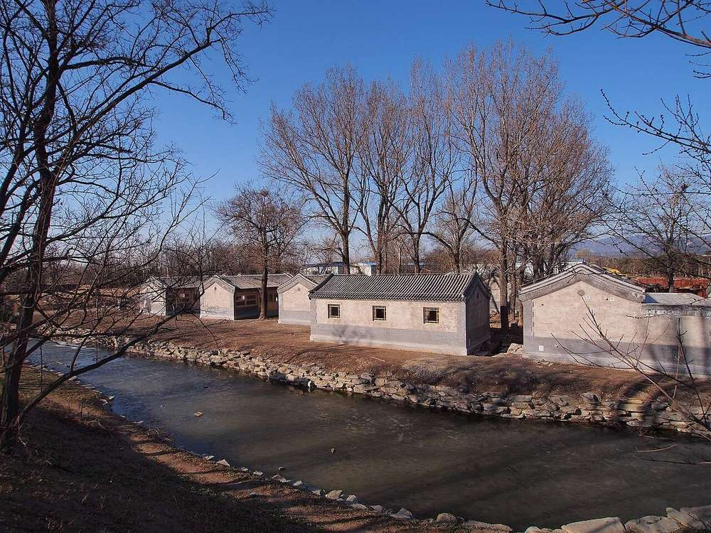

同乐园


概况
同乐园位于曲院风荷以北，是宫廷的戏园：前后楼各五间，南向；其前为北向的三层大戏台清音阁；东为永日堂；中有南北长街，街西为抱朴草堂，街北过双桥即舍卫城（S05 j82:27b-28a；E2146；E2148）。据《养吉斋丛录》，自大宫门东转东楼门，乘舟约一里可到；乾隆年间每年自正月十三日起在此赐宴听戏，宗室王公、蒙古王公和属国陪臣入座，万寿节前后也在此演戏（S202 j13；E2148）。咸丰二年（1852）咸丰帝万寿时仍在此赐宴（S207；E1557）。马龙（Malone）记述，两排房屋夹着花岗石路，其中有戏台，“像城里的商业街”（S02 p.94；E2067）。
1744年四十景图及御制诗序
同乐园不在四十景之内，位于第三十八景坐石临流的范围（P0038）。乾隆帝诗序在写到溪上石亭之后说“東為同樂園”，诗末以东晋永和兰亭修禊作比：“年年上已尋歡處便是當時晉永和”（S05 j82:26a）。
1860年以前的变化
The great stage 清音阁 of 同乐园 is given in metres on mhymy record 7297, converted from a Yangshi Lei drawing that the page does not name: lower central bay 5.50 m, side bays 4.51 m (front c. 14.5 m), platform 0.96 m, middle storey 14.53 m square inside the eaves, upper storey 13.09 m, eave columns 4.42 / 3.71 / 2.72 m, 23.94 m from the ground to the ridge; a plan of 道光十八年 (1838) to cut it to two storeys, 3.60 m lower, met objections from officials; whether it was carried out is not known here (S310 rec. 7297). The National Museum of China holds a card model (烫样) of the 同乐园 group; one report says it was made for Tongzhi's repair (S328, E2158), another gives no date (S922).
逐座建筑
| 建筑 | 开间 | 屋顶 | 层数 | 朝向 | 来源 |
|---|---|---|---|---|---|
| 同乐园看戏楼 Tongle Yuan kanxi lou | 5 | 2 | S | S01, S05, S43 | |
| 清音阁 Qingyin Ge | 3 each side (square) | 3 | N | S01, S05, S43, S103, S202 | |
| 扮戏楼 Banxi lou | 5 | S01, S43, S103 | |||
| 东西转角配楼 Dongxi zhuanjiao peilou | 14 each | S43, S337 | |||
| 永日堂 Yongri Tang | 1 | S01, S05, S47, S360 | |||
| 南北长街 (买卖街) Nanbei Changjie (Maimai Jie) | S02, S05, S06, S211 | ||||
| 抱朴草堂 Baopu Caotang | 1 | S05 | |||
| 双桥 Shuang qiao | S01, S05 |
另有15座地盘图上未注名称的建筑
室内
S202 j13 (E2148): the emperor and consorts in the five-bay main building, the guests in the east and west wings, each placed in an assigned room; a stage "about ten zhang deep and wide" (some 32 m, against about 14.5 m in the drawing's figures) in three tiers, gods let down from the top and demons up from below; plays with titles such as 清平见喜 and 万年甲子; actors chosen by the textile commissioners (织造), customs superintendents and salt offices until Daoguang sent the 南府 Nanfu players home in 1821 and eunuchs took over. Hanlin officials first sat in under Jiaqing (E2150). Attiret describes the court fair, which Malone places on this street (S02 p.95): eunuchs played the merchants, with quarters for silks and cloth and streets for porcelain and lacquer, and real goods from Peking dealers (S157, E2160).
现存
目前未见同乐园的考古发掘。现有最好的尺寸是梦回圆明园网站据一张未注明的样式雷图换算的清音阁数据（S310，ysltd 7297）。买卖街向北直通舍卫城，长逾130米（S941）。
考古与勘测
我们读到的资料中未见其遗址的发掘或勘测。
他人的复原
现代诠释，不是证据，本项目不据以定尺寸或位置。
- 样式雷烫样 Yangshi Lei card models of Yuanmingyuan: 泉石自娱, 同乐堂, 上下天光, 思顺堂, 天地一家春, 恒春堂, 课农轩, 廓然大公, 勤政殿, 万方安和 (雷氏 Lei family hol 查看： thepaper.cn
已知尺寸
| 部位 | 项目 | 尺寸 | 方法 | 等级 | 来源 |
|---|---|---|---|---|---|
| stage 清音阁 | Frontage | 32 m ± 6.4 | a 测绘或清代图档 | B | S202, 卷十三, line 938 of the corpus file (E2148) |
| 清音阁 three-storey stage | Frontage | 14.52 m ± 0.1 | a 测绘或清代图档 | B | S310, mhymy ysltd 7297 (清音阁样式雷图, free part), metres as printed; drawing not named |
| 清音阁 ground to ridge | Ridge height | 23.94 m ± 0.05 | a 测绘或清代图档 | B | S310, mhymy ysltd 7297 |
| 清音阁 lower-storey eave columns | Column height | 4.42 m ± 0.02 | a 测绘或清代图档 | B | S310, mhymy ysltd 7297 |
| 清音阁 platform 台明 | Platform height | 0.96 m ± 0.02 | a 测绘或清代图档 | B | S310, mhymy ysltd 7297 |
| 清音阁 three-storey stage | Column height | 4.42 m ± 0.05 | a 测绘或清代图档 | B | S310, mhymy ysltd 7297 (清音阁样式雷图, free part), metres as printed; drawing not named |
| 清音阁 three-storey stage | Ridge height | 23.94 m ± 0.05 | a 测绘或清代图档 | B | S310, mhymy ysltd 7297 (清音阁样式雷图, free part), metres as printed; drawing not named |
| 清音阁 three-storey stage | Platform height | 0.96 m ± 0.05 | a 测绘或清代图档 | B | S310, mhymy ysltd 7297 (清音阁样式雷图, free part), metres as printed; drawing not named |
| the scene's outline on the plan | Extent, long side | 187 m ± 10 | b 地盘图或遗址 | C | S01, layers/scenes_1860, UTM 50N, minimum rotated rectangle |
| the scene's outline on the plan | Extent, short side | 86 m ± 10 | b 地盘图或遗址 | C | S01, layers/scenes_1860, UTM 50N, minimum rotated rectangle |
| the scene's outline on the plan | Area | 13500 m² ± 1300 | b 地盘图或遗址 | C | S01, layers/scenes_1860, UTM 50N, polygon area |
全部23个数字
| 部位 | 项目 | 尺寸 | 方法 | 等级 | 来源 |
|---|---|---|---|---|---|
| 清音阁 lower storey, two side bays | Bay width | 4.51 m ± 0.03 | a 测绘或清代图档 | B | S310, mhymy ysltd 7297 |
| 清音阁 middle storey, square inside the eave columns | Middle storey square | 14.53 m ± 0.03 | a 测绘或清代图档 | B | S310, mhymy ysltd 7297 |
| 清音阁 three-storey stage | Bay width | 5.5 m ± 0.05 | a 测绘或清代图档 | B | S310, mhymy ysltd 7297 (清音阁样式雷图, free part), metres as printed; drawing not named |
| 清音阁 three-storey stage | Column h middle | 3.71 m ± 0.05 | a 测绘或清代图档 | B | S310, mhymy ysltd 7297 (清音阁样式雷图, free part), metres as printed; drawing not named |
| 清音阁 three-storey stage | Column h upper | 2.72 m ± 0.05 | a 测绘或清代图档 | B | S310, mhymy ysltd 7297 (清音阁样式雷图, free part), metres as printed; drawing not named |
| 清音阁 three-storey stage | Middle eave square | 14.53 m ± 0.05 | a 测绘或清代图档 | B | S310, mhymy ysltd 7297 (清音阁样式雷图, free part), metres as printed; drawing not named |
| 清音阁 three-storey stage | Middle inner square | 10.21 m ± 0.05 | a 测绘或清代图档 | B | S310, mhymy ysltd 7297 (清音阁样式雷图, free part), metres as printed; drawing not named |
| 清音阁 three-storey stage | Platform overhang | 1.12 m ± 0.05 | a 测绘或清代图档 | B | S310, mhymy ysltd 7297 (清音阁样式雷图, free part), metres as printed; drawing not named |
| 清音阁 three-storey stage | Side bay width | 4.51 m ± 0.05 | a 测绘或清代图档 | B | S310, mhymy ysltd 7297 (清音阁样式雷图, free part), metres as printed; drawing not named |
| 清音阁 three-storey stage | Upper eave square | 13.09 m ± 0.05 | a 测绘或清代图档 | B | S310, mhymy ysltd 7297 (清音阁样式雷图, free part), metres as printed; drawing not named |
| 清音阁 three-storey stage, lower storey centre bay | Bay width | 5.5 m ± 0.03 | a 测绘或清代图档 | B | S310, mhymy 样式雷图档 7297 清音阁样式雷图, free part (19%) |
| 同乐园 买卖街 street, N-S arms together | Street length ns | 130 m ± 10 | e 无测绘依据 | C | S941, single page |
本页引用的资料 (17)
- S01 Plan of the Yuanmingyuan Imperial Garden-Palace, unknown artist, three hanging scrolls, ink and colour on paper, 177 × 253 cm together
- S02 Carroll Brown Malone, History of the Peking Summer Palaces under the Ch'ing Dynasty, Illinois Studies in the Social Sciences XIX, Urbana 1934; reprint Paragon 1966
- S05 《日下旧闻考》 Rixia jiuwen kao (Yu Minzhong et al.), juan 80-85, Kanripo KR2k0036, WYG base
- S06 zh.wikipedia 圆明园, 圆明园四十景, 长春园, 绮春园, 西洋楼
- S43 圆明园戏场探微, 圆明园遗址公园 site
- S47 贾珺 圆明三园中的祀庙祠宇建筑探析, 故宫博物院院刊 2012 no.3
- S103 黄赛丰, 《圆明园戏场探微》, 圆明园官网
- S157 Attiret, letter of 1 Nov 1743, Spence transl
- S202 吳振棫 養吉齋叢錄, 校點 text as held in the 殆知閣 corpus; only 卷一 to 卷十七 are in this copy, simplified characters
- S207 清實錄 文宗實錄 (咸豐朝)
- S211 姚元之 竹葉亭雜記
- S310 梦回圆明园 mhymy.com, 档案史料 > 样式雷图档 /dasl/ysltd/: per-drawing records (图名, 图幅, 款式, 图纸性质, 绘制年代, 收藏机构, 排架编码) with a description, for drawings held by NLC 国家图书馆善本部, 故宫博物院图书馆, 清华大学
- S328 Report on the National Museum's conservation of the 同乐园 model, reprinted on 梦回圆明园; also xinhuanet
- S337 中国人民大学清史研究所 清代皇家园林研究中心, 学术综览 (xstl, lswh, jzys, ylfj, wxda, hwyj): reposted articles, 397 listed, 121 fetched
- S360 圆明园管理处 (attachment on the park's site), 圆明园百景史事分景汇编: dated records and imperial poems scene by scene, compiled from the Veritable Records and the emperors' collected poem
- S922 新华网 Xinhuanet, 国博文保院举行馆藏样式雷烫样修复媒体开放活动 (National Museum of China, conservation of the 同乐园 card model)
- S941 Unknown author, one page of an article on the 买卖街 shopping streets of the Yuanmingyuan (PDF T00121_00 on the Palace Museum site, probably 《紫禁城》); cites the 含经堂 dig brief